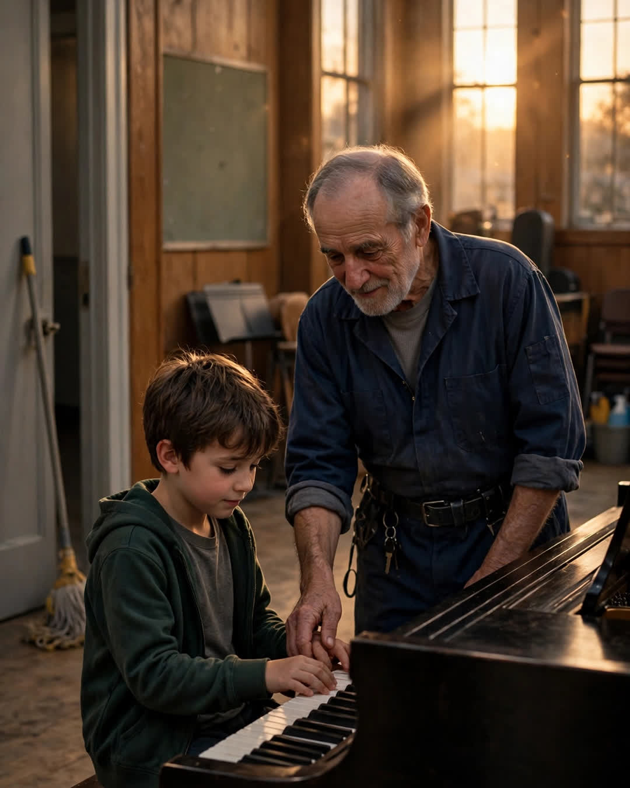

The Janitor's Piano
A Clipp Kaili original story

The janitor at our school could play the piano like the radio, and he pretended he couldn't play at all.
His name was Mr. Boone, and during the day he pushed a wide broom down the halls and fixed everything from stuck lockers to the trophy case light. The music room piano sat locked and mostly silent, except on assembly days, when the music teacher played the same three songs.
I found out by accident. I was nine, hiding in the music room after school because the older boys had started waiting for me at the bus loop. I heard the door, froze behind the risers — and watched Mr. Boone set down his mop, lift the piano lid like he was opening something holy, and play.
Not practice. Not scales. Music that filled the little room and pressed against the windows.
He saw my shoe before he saw me.
"You gonna tell?" he asked, not angry, just tired, like a man whose one secret room had been found.
I shook my head so hard it hurt.
"Then sit down," he said. "If you're hiding anyway, your hands might as well learn something."
For two years, that was our arrangement. Three afternoons a week, after the buses left, the shyest kid in the third, then fourth, then fifth grade sat at that piano while the janitor taught him — no books, no fees, no recital talk. He taught me by ear. He taught me patience by making me play the hard part slow until slow stopped feeling like failure.
"Everybody claps for the fast fingers," he'd say. "Nobody claps for the one who keeps going. Be the one who keeps going."
My parents thought I was in the after-school homework club. Mr. Boone never corrected them. He said some good things grow better before anybody makes a speech about them.
In May of fifth grade, the music teacher announced the spring recital, and for the first time ever, she opened it to any student who wanted to audition. I didn't tell Mr. Boone I'd signed up. I was afraid he'd talk me out of it — or worse, that he'd be proud in a way I couldn't carry onto a stage.
The night of the recital, the auditorium was full. I played second to last. My hands shook through the first four bars, and then his voice was in my head — keep going — and the shaking settled into the music like it belonged there.
When I finished, the room did the thing rooms do. They applauded. But I was looking at the back, by the doors, where a man in a clean gray shirt stood with his hands folded like he was holding something fragile.
Mr. Boone was crying without bothering to hide it.
Later, in the hallway, my mother asked how long I'd been taking lessons and who had taught me. I pointed. She walked straight to him and took both his hands — hands that cleaned our school, that fixed our lockers, that had taught her son to be heard.
"You gave him a voice," she said.
"No, ma'am," he said. "Boy always had one. I just unlocked the piano."
Some people hold the keys to a building. A rare few use them to open a child.
This story is a work of fiction, written to touch hearts and bring families closer.
← Back to all stories